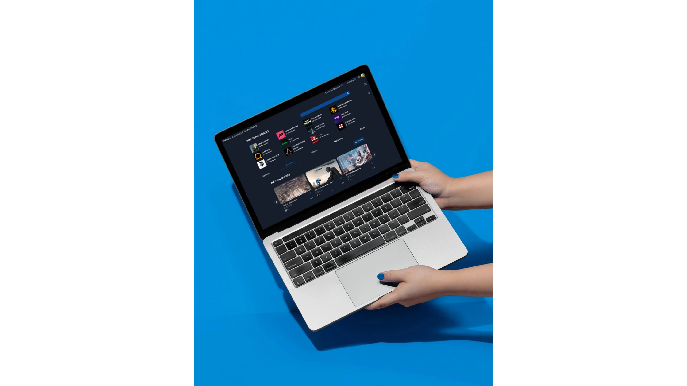
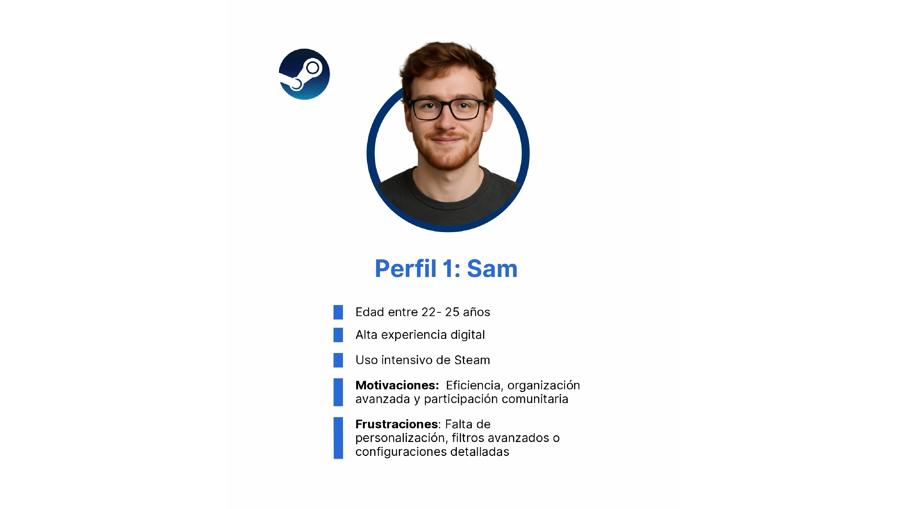
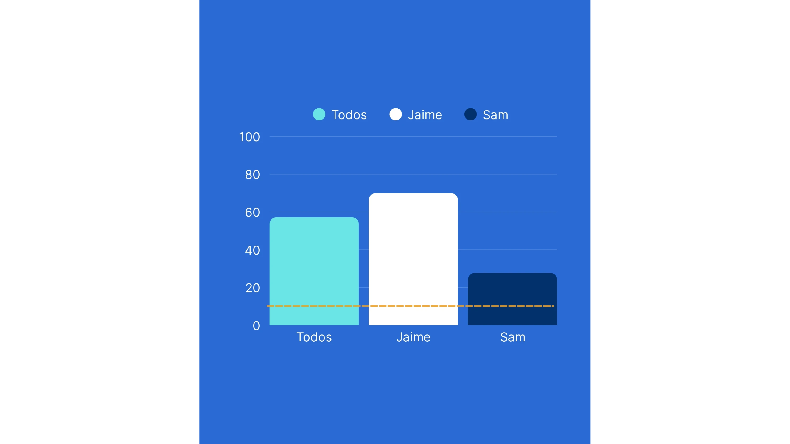
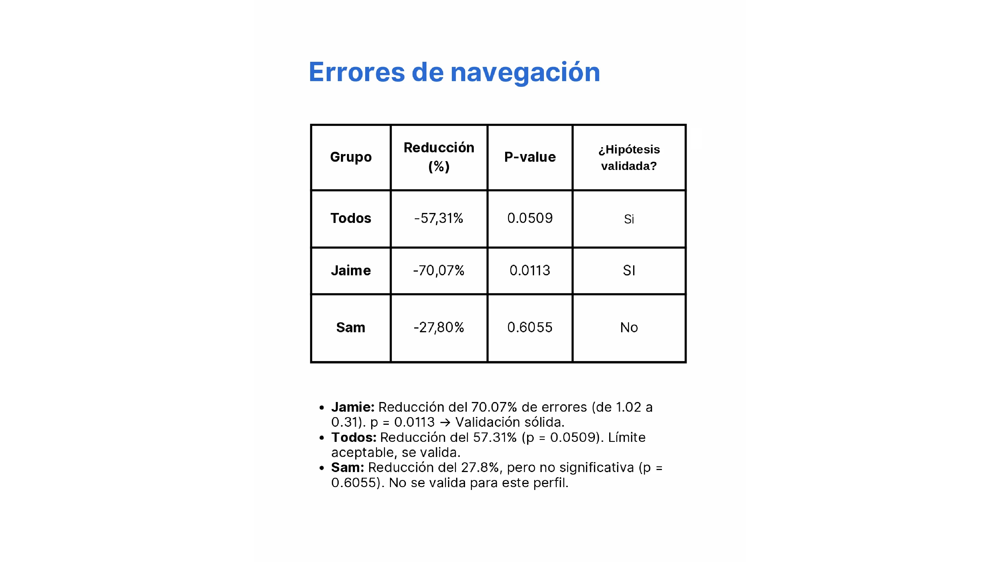
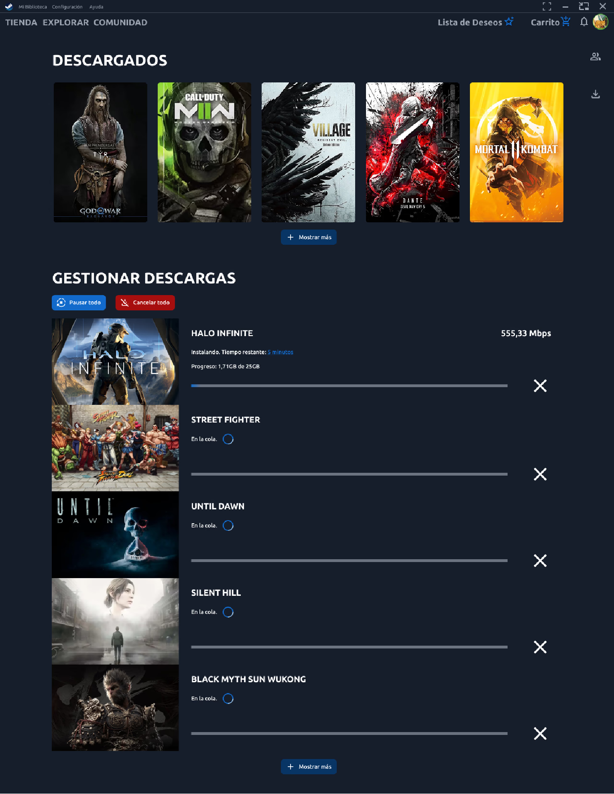

Análisis y rediseño conceptual de Steam
Evaluación de la experiencia de usuario y propuesta de mejoras basadas en investigación.
Descripción
Un estudio UX enfocado en identificar problemas de usabilidad dentro de Steam y proponer soluciones estratégicas para mejorar la navegación, el descubrimiento y la experiencia de compra.
Objetivo del proyecto
Analizar la experiencia actual de Steam para detectar problemas de usabilidad y proponer mejoras que optimicen la interacción del usuario con la plataforma.


Investigación
Se realizó un análisis de la interfaz actual de Steam, evaluando navegación, estructura de contenido y jerarquía visual para detectar oportunidades de mejora.
- Evaluación heurística
- Análisis de interfaz existente
- Identificación de pain points
- Benchmark de plataformas similares
Problemas
Se detectaron múltiples fricciones que afectan la experiencia del usuario.
- Interfaz saturada de información
- Baja jerarquía visual
- Navegación confusa
- Dificultad para descubrir juegos
- Exceso de elementos distractores

Errores de navegación
| Grupo | Reducción | P-value | ¿Mejora visible? |
|---|---|---|---|
| Todos | -57,71% | 0,051 | Sí |
| Jaime | -11,39% | 0,061 | No |
| Sam | -27,80% | 0,023 | Sí |
Oportunidades
- Simplificación de la interfaz
- Mejor organización del contenido
- Navegación más intuitiva
- Enfoque en descubrimiento relevante
- Reducción de carga cognitiva

Propuesta
Se plantea un rediseño conceptual basado en principios de UX/UI que mejore la claridad visual, la navegación y la experiencia general del usuario.
- Jerarquía visual clara
- Layout más limpio
- Enfoque en contenido relevante
- Flujo de navegación optimizado

Aprendizajes
Este proyecto permitió profundizar en el análisis de interfaces complejas y en la identificación de problemas de usabilidad a nivel estructural.
- Importancia de la jerarquía visual
- Impacto de la sobrecarga de información
- Valor del análisis UX antes del diseño
- Pensamiento crítico en diseño
Impacto
El análisis permite entender cómo mejorar plataformas complejas como Steam, enfocándose en la experiencia del usuario y la optimización de la interacción.